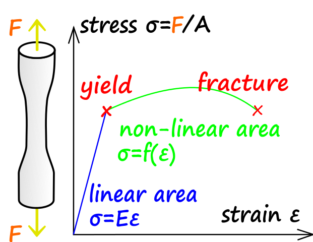

Strength of Materials (or Mechanics of Materials)
References
- Wikipedia: strength of materials
- Wikipedia: engineering yield
- Wikipedia: mechanical properties
- Wikipedia: ultimate tensile strength
- Wikipedia: elasticity
Stress
Uniaxial stress is $\sigma = \frac{F}{A}$ where F is force (N) and A is area (m2)
- Compressive stress (squash)
- Tensile stress (pull)
- Shear stress (scissors)
Strength Terms
- Yield strength: lowest stress that produces permanent deformation
- Compressive strength: compressive stress that leads to failure
- Tensile strength: tensile stress that leads to failure
- Fatigue strength: measure of material strength un cyclic loads
- Impact strength: capability of material to withstand suddenly applied loads and is expressed in terms of energy
Tensile Strength
Ultimate tensile strength (UTS) is the ability of a material to withstand loads which try to elongate it. A tensile test records a materials engineering stress verse strain. The highest point of the stress-strain curve is the UTS.

PLA vs ABS
ABS plastic filament stands for acrylonitrile butadiene styrene. It is a sturdy and strong plastic that is oil-based.
PLA filament is made from sugarcane and cornstarch which are organic materials called polylactic acid. Unlike ABS, PLA has a crystaline structure (due to sugar and cornstarch) which makes it brittle. Any cracks that form tend to propagate easily. Also, under the right compost conditions, PLA is biodegradable.
- Average tensile strengths of 28.5 MPa for ABS and 56.6 MPa for PLA
- Average elastic moduli of 1807 MPA for ABS and 3368 MPa for PLA
- This is looking at a material’s ability to resist distortion and returning to its original shape after a load is removed
So what you can take away from this is, PLA is stronger, but more brittle (likely to fracture especially under impact loads).